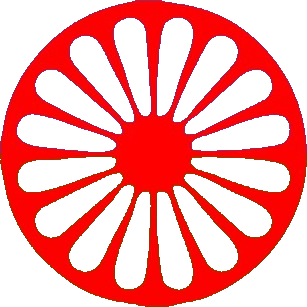
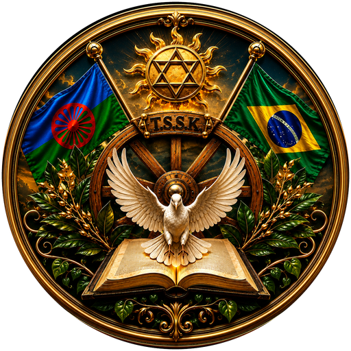

Pelos caminhos de São Francisco de Assis
A história e a tradição do T.S.S.K.
Consultas, orientação e trabalhos.
Giras, datas e informações.
Fale com a gente pelo WhatsApp — resposta o mais rápido possível.
Chamar no WhatsApp